| |
Nitro Review
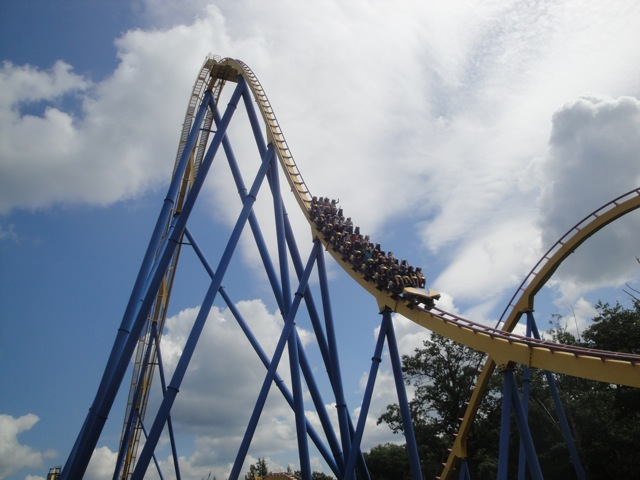
We're here at Six Flags Great Adventure. Today's ride we'll be reviewing for you is Nitro. This is definetly one of the better B&M Hyper Coasters. This is a ride that would normally be the star attraction, but here, it's overshadowed because you've got FREAKING EL TORO!!! BEST COASTER ON THE PLANET!!! So yeah. Having that as your next door neighbor is kind of underwhelming. Though to be fair, you shouldn't feel to bad for the ride since it constantly gets ranked as one of the Top Coasters in the country (it's not) thanks to most coaster enthusiasts fetish for B&M Hyper Coasters. Anyways, let's ride. You then get in the car and pull down the clamshell lap bar. Now clamshells are awesome as you have a lot of freedom. But trust me. They keep you in. And we're off. We go around the typical pre-lift dip and then you then begin to climb the lifthill. Higher and Higher you go. Eventually you reach the top, getting a good view of nothing (New Jersey is boring), and then we head down the first drop. It's a really fun first drop and I will definetly admit. It just pours on the speed, so yeah. We're flying now. We then shoot up the first hill. We still have some all right speed at the top, get some really nice airtime, and then head back down towards the ground with a spiral drop. There's not much for laterals here, but we gain all our speed back and are still flying. We then soar up into another airtime hill and you get some really nice floater air here. We then rise up into the hammerhead, which is really cool as we get some laterals here. We drop back down and soar through another airtime hill, which one again, provides us with some really strong floater air. No seriously, if floater air is your thing, then Nitro is definetly a ride for you. We rise up through another hill, get more floater air, and head into another curved drop. There aren't much laterals here, but I still thouroughly enjoy it. We then shred through a double upward helix. You definetly get some laterals here, and all in all, it's just a really cool way to get up to the midcourse brakes. Aww. I was enjoying all this speed. =( Well don't worry, Nitro is still fun. We drop back down, and we're going at ok speeds. Meh. We then rise up into a bunny hop, and just like in the first half, we get some nice floater air. So that's still good. And we just repeat. Another Bunny Hop. Nice Floater Air. Drop back down. Another Bunny Hop. Nice Floater Air. Drop Back Down. We then rise up into the brake run, but at least there's a nice little pop of airtime at the end, and it's not floater air. No, we get EJECTOR air right here. SWEET!!! And then it ends. LAME!!! While I wouldn't call it one of the best coasters in the country or anything, I would definetly call Nitro a really good ride, one of my favorite B&M Hyper Coasters, and definetly a ride that you should check out when visiting Six Flags Great Adventure.
9/10
Location: Six Flags Great Adventure
Opened: 2001
Built by: B&M
Last Ridden: August 4, 2011
Nitro Photos
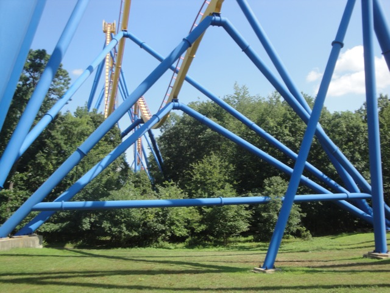
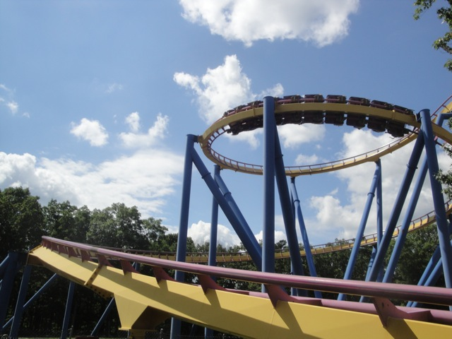
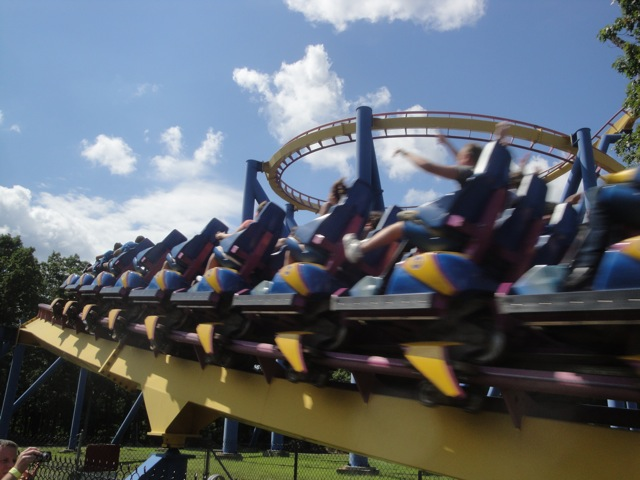
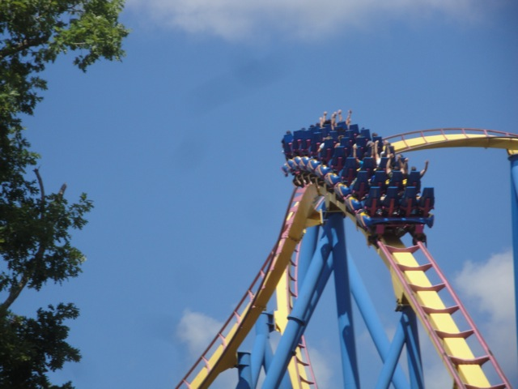
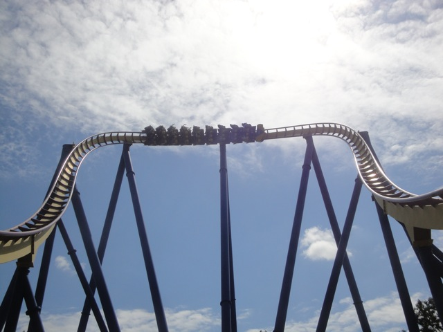
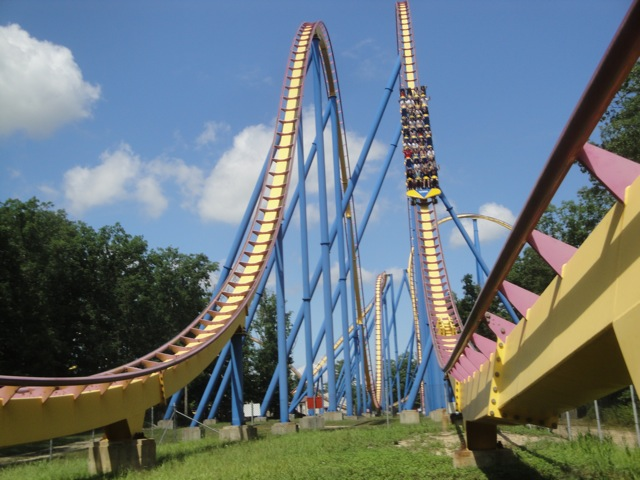
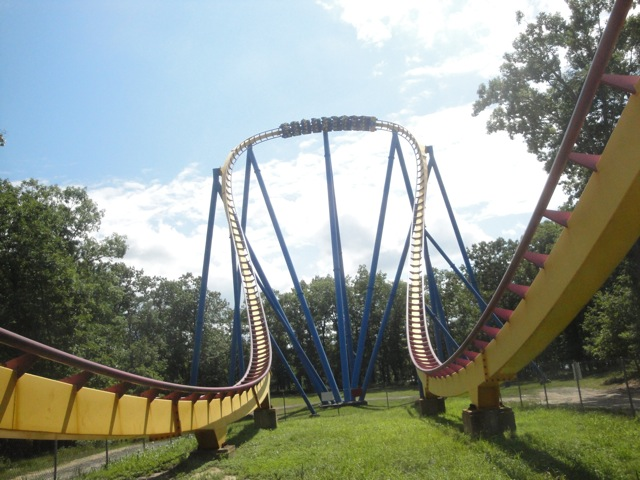
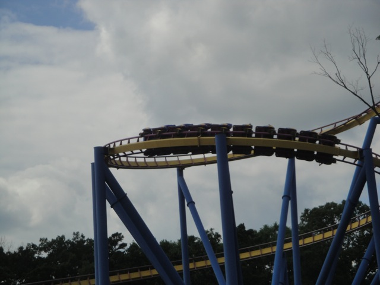
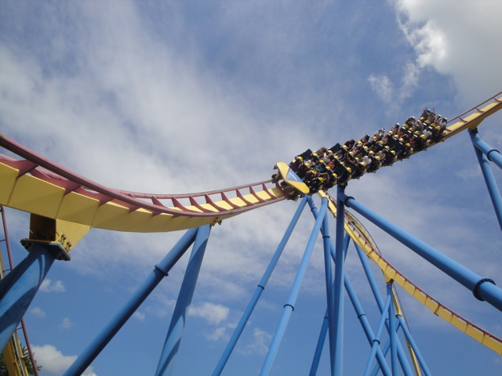
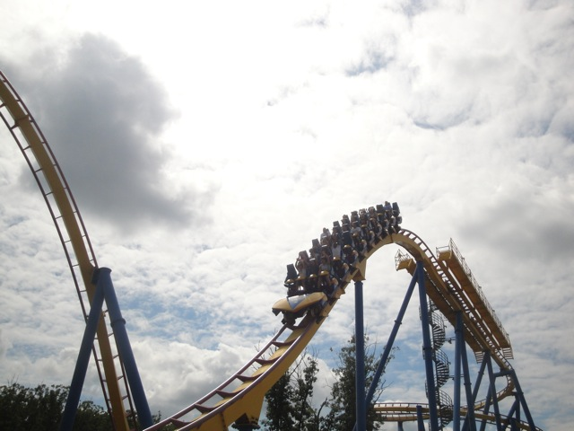
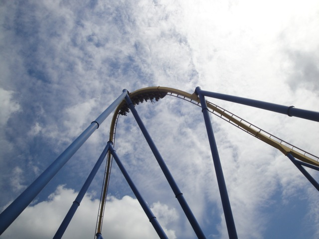
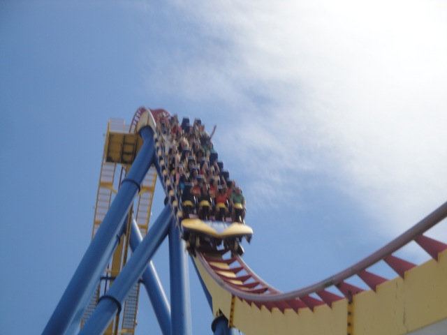
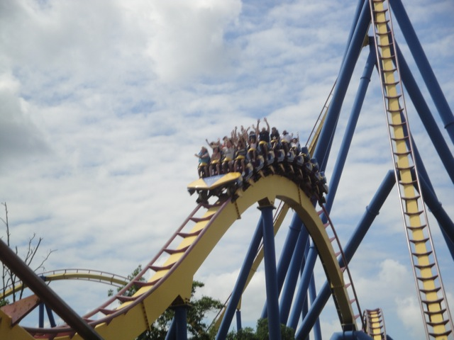

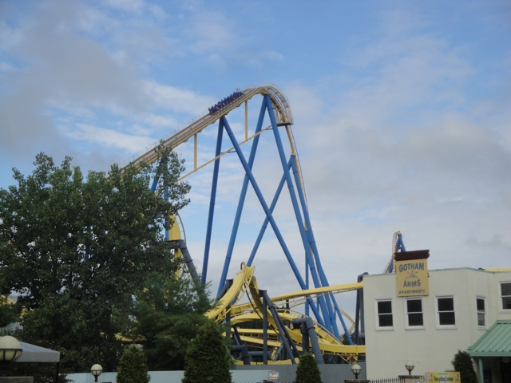
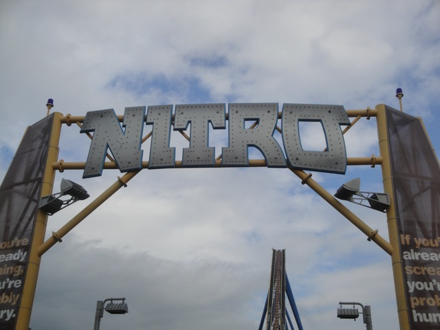
Home
|